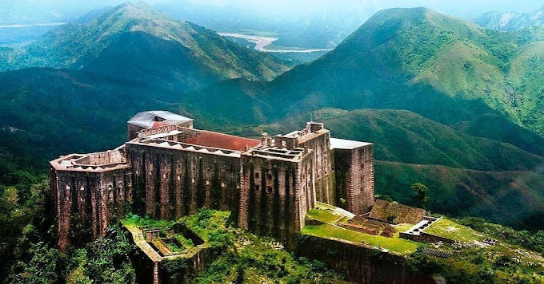
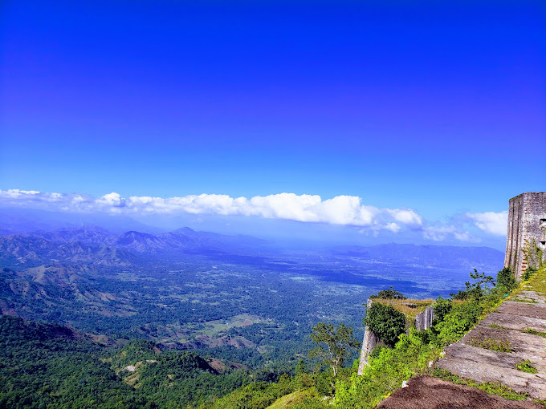

Citadelle
- 
- 
Histoire de la Citadelle
La forteresse est construite après l'indépendance en 1804 pour défendre la partie nord de l'île d'Haïti contre un éventuel retour des Français. 20 000 personnes participent aux travaux de construction qui durent quatorze années. Il est à noter que 2 000 de ces travailleurs périssent au cours de la construction.
Les bâtiments ont été en partie détruits par le tremblement de terre de 1842. Des travaux de reconstruction, menés par l'Institut de sauvegarde du patrimoine national (ISPAN) ont permis de sauvegarder ce patrimoine.
Une plaque a été déposée vers 1990 pour rappeler aux Haïtiens visitant ce lieu que le roi Henri Ier, qui s'était suicidé le 8 novembre 1820 au palais de Sans-Souci, a été enterré en sa Citadelle. Ce lieu a une valeur patriotique importante aux yeux des Haïtiens.